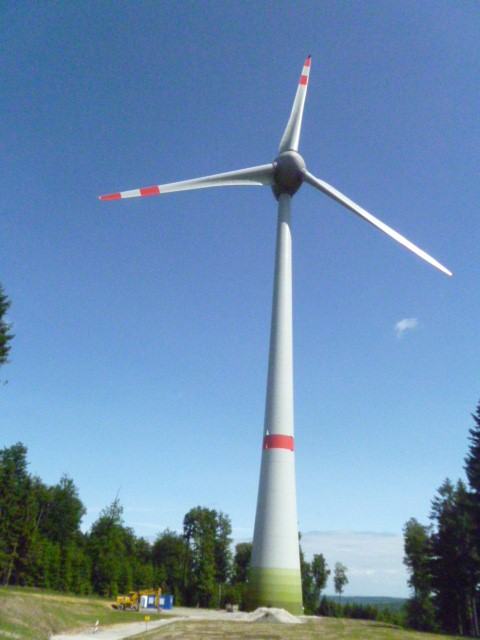

Welche Energiemengen von Grünem Wasserstoff können weltweit erzeugt werden?
Im Folgenden geht es um Abschätzungen und Größenordnungen ausgehend vom Gesamtprimärenergiebedarf für
Deutschland. Daraus ergibt sich der Primärenergiebedarf für einen einzigen Bürger und daraus wiederum
der Bedarf für die Weltbevölkerung unter der Annahme,
dass jedem Bürger weltweit so viel Primärenergie zur Verfügung steht wie einem Deutschen.
Unsere Abschätzung wird zeigen, dass diese großen Energiemengen 2-fach, 3-fach... weltweit
durch Sonnenenergieernte mit Windkraftwerken und Parabolrinnenkraftwerken erzeugt werden können. Ein Teil
der so gewonnenen elektrischen
Energiemenge wird nach Bedarf im Energieträger Wasserstoff gespeichert. Dabei auftretende
Wirkungsgradverluste sind wegen der enormen verfügbaren Energiemengen unwichtig.
- Primärenergiebedarf in Deutschland: \(1,4 \cdot 10^{16} \frac {kJ} {Jahr} = 3,9 \cdot 10^{12} \frac {kWh} {Jahr}\)
(Größenordnung des Durchschnitts der letzten Jahre, Stand Februar 2020) - Umgerechnet pro Person: \(47\ 561 \frac {kWh} {Jahr}\)
- Umgerechnet für die gesamte Weltbevölkerung (7,7 Milliarden Menschen):
Gesamtenergiebedarf: \(3,7 \cdot 10^{14} \frac {kWh} {Jahr}\)
(jeder Mensch hätte so viel Energie zur Verfügung wie ein Bundesbürger)
Sonnenenergieernte mit Wind- und Parabolrinnenkraftwerken
Energieausbeute mit Windkraftwerken
Damit die Nutzung von Windkrafträdern effektiv wird, muss die Windgeschwindigkeit dort mindestens 15 km/h betragen.
Das abgebildete Windkraftwerk (7,5 MW) auf dem Hunsrück (RLP) liefert onshore eine
Jahresenergiemenge von \(1,88 \cdot 10^7\ kWh\).
Ausgehend von der Installation von 7,5-12 MW – Anlagen auch offshore und in noch windreicheren
Gebieten (z.B. Feuerland oder Küstenregionen) gehen wir von einem Jahresertrag von \(3,5 \cdot 10^7\ kWh\)
pro Windkraftwerk aus.
\[{1,85 \cdot 10^{14}\ kWh \over 3,5 \cdot 10^7\ kWh} = 5\ 285\ 714\]
Weltweit wären also in der Größenordnung 5 285 714 Windkraftwerke zu installieren, um den halben
Primärenergiebedarf in elektrischer Energie zu decken.
Bemerkung für die Größenordnung: In Deutschland sind aktuell 30 000 Windräder installiert. Also
wären weltweit 175-mal so viele wie in Deutschland zu installieren.
Unter der Annahme, dass 2,5 Windkraftwerke (Windräder) auf einem km2 stehen würden, benötigen wir weltweit 2 078 253 km², was einem Quadrat von etwa 1 500 km Seitenlänge entspricht.
Unsere Animation sowie unser Google Earth Projekt (s. u.) verdeutlicht die Machbarkeit!

Windkraftwerk auf dem Hunsrück (RLP)
Ernte mit Parabolrinnenkraftwerken
Unsere Berechnungen beruhen hier auf Gebieten, die eine jährliche Sonneneinstrahlungsenergie von
mindestens 2 200 kWh pro Jahr vorweisen.
Pro m2 erntet ein Rinnenkraftwerk 237 kWh pro Jahr, also \(2,37 \cdot 10^8 \ kWh\) pro Jahr und
km2.
\[ \frac {1,85\cdot10^{14} \ kWh \cdot km^2} {2,37\cdot10^8 \ kWh} = 780\ 591 \ km^2\]
Weltweit entspricht das einem Quadrat von etwa 880 km Seitenlänge.
Die andere Hälfte des Primärenergiebedarfs wäre also mit Rinnenkraftwerken gedeckt.
Unsere Animation sowie unser Google Earth Projekt (s. u.) verdeutlicht die Machbarkeit!
 Parabolrinnenkraftwerk in Andalusien
Parabolrinnenkraftwerk in Andalusien
Fazit zur Bereitstellung der Energiemengen
Ohne die Sonnenenergieernte mit Solarmodulen zu nutzen, ist die mit Rinnen- und Windkraftwerken gewonnene Energiemenge bei Weitem groß genug, um unter Berücksichtigung der üblichen Wirkungsgradverluste so große Mengen des Energieträgers Wasserstoff durch Elektrolyse zu erzeugen, dass sie in der Größenordnung ein Vielfaches der fossilen Energieträger sind.
Google Earth Animation
Die orangenen Flächen symbolisieren die Solarmodul- oder Parabolrinnenflächen und die roten Flächen die Windflächen. Es ist entweder Solar oder Wind, oder eine Mischung von beiden nötig, um die Welt komplett mit grüner Energie zu versorgen. Die zwei großen rechteckigen Flächen in Nordafrika sind alle kleinen Flächen für jeweils Wind und Sonne zusammengefasst, um den im Vergleich zur Erdoberfläche, kleinen Flächenbedarf zu veranschaulichen.
Interaktives Google Earth Projekt
Schaue dir die Flächen aus der Animation maßstabsgetreu auf unserer Erde an!

Öffne das Google Earth Projekt